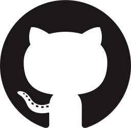
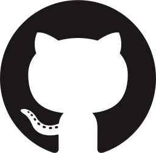
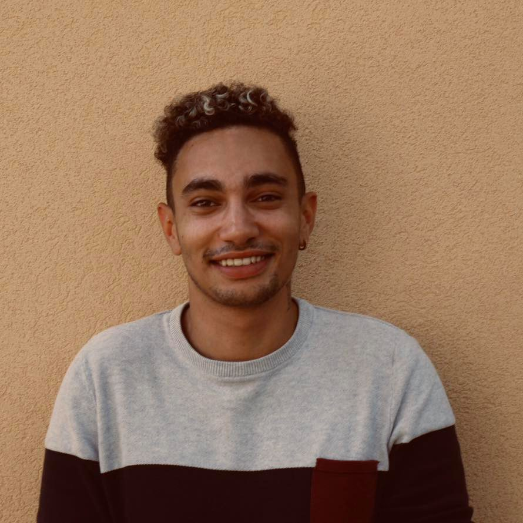

Bonjour, je m'appelle Adison et j'ai 24 ans. Cela fait 2 ans que je pratique le développement, étant originaire de Perpignan, j'ai décidé de venir à Marseille pour certifier mes compétences et faire de ma passion mon métier. Lors de mon arrivée à Marseille j'ai intégré la formation "développeur Web & Web mobile", formation dont j'ai acquis le titre (bac+2) et pendant laquelle j'ai acquis 2 certifications, Maîtrise en qualité web OPQUAST avec mention confirmée et la certification "Méthodes agiles". Après cette formation j'ai intégré l'Apple Foundation Program 1 et 2 dont j'ai acquis les deux certifications avec succès, l'AFP étant terminée, avec un collaborateur nous avons fondé SWIFT France, première communauté francophone dédiée au langage SWIFT, ma chaine you tube contient des tuto speed code sur ce langage. Aujourd'hui ? Je developpe une application ios qui aide ses utilisateurs à cuisiner, application qui sera déployée très prochainement, pour plus d'informations contactez-moi.
